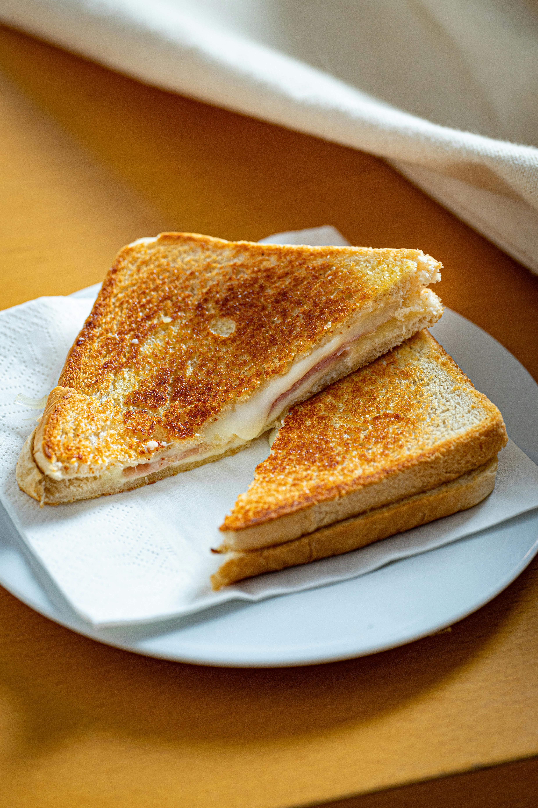

Como hacer un Sandwich de Queso Especial

Descripción
Este es de mis versiones de sandwiches favoritos, los cuales suelo hacer cuando quiero disfrutar de una buena cena y de un tiempo para cocinar, porque este si toma su tiempo
Tiempo de duración: 35 minutos
Ingredientes
- Pan de molde
- Variedad de quesos o queso al gusto (Aqui es muy personal)
- Mayonesa
- Cebolla
- Mantequilla
- Mix de especias (Tambien personal, pero utiliza algo)
Pasos
- Unta mayonesa en el interior de las tapas de tu pan y ponlo en la sarten a fuego bajo por 2 minutos
- Corta el queso en pequeños trozos y la cebolla en pequeñas tiras
- Cuando este listo el pan, ponle un cubito de mantequilla a la la sarten y frie la cebolla
- Ya que este lista la cebolla, arma tu sandwich arma tu sandwich con los trozos de queso, la cebolla frita y un poco del mis de especias
- Unta mantqueilla en la sarten y pon tu sandwich hasta que se dore
- Ya que se haya dorado, vuelve a untar mantequilla a la sarten y voltea el sandwich
- Ya que este dorado de ambos lados, dejalo reposar un rato y cortalo en triangulos
- Disfruta!
Inicio